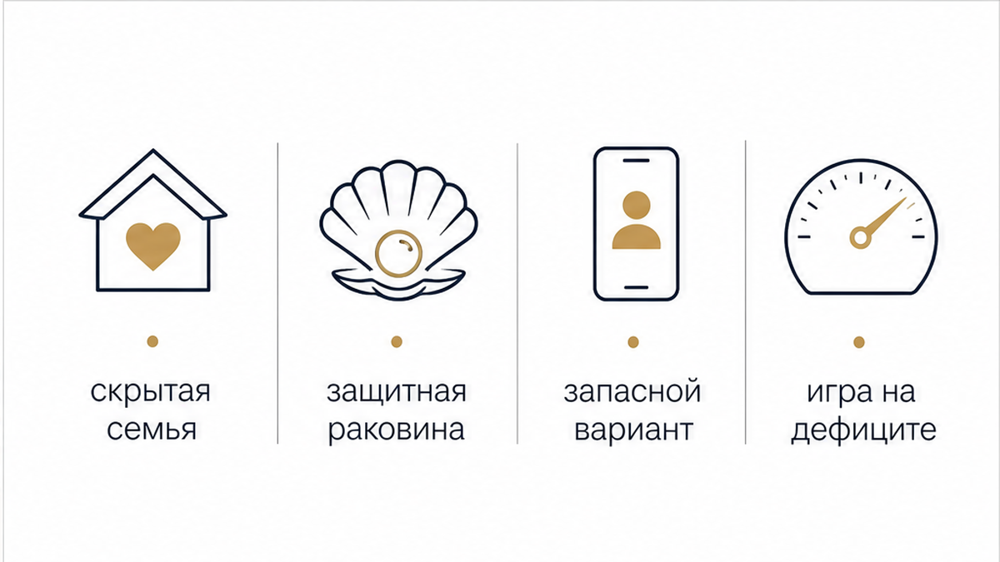
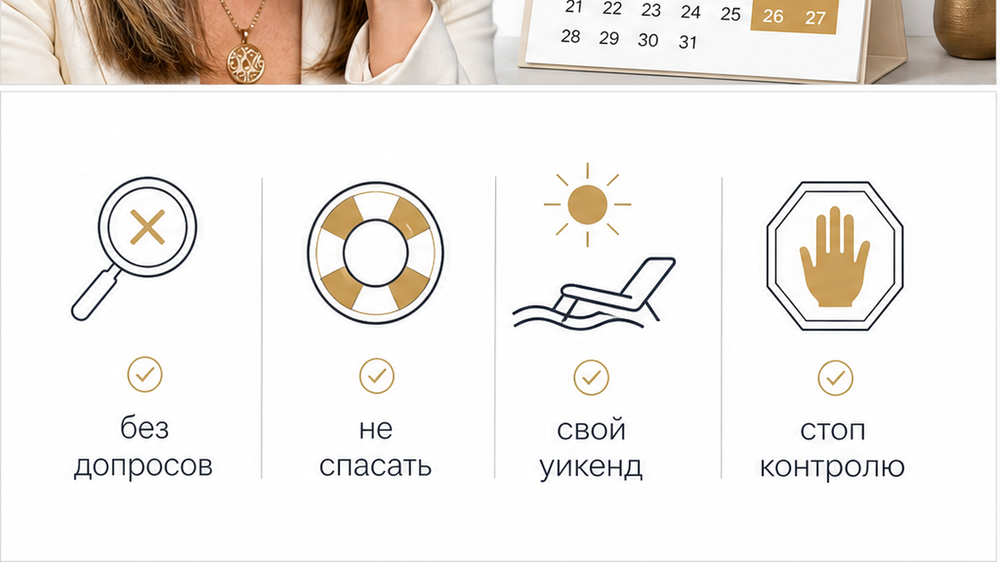
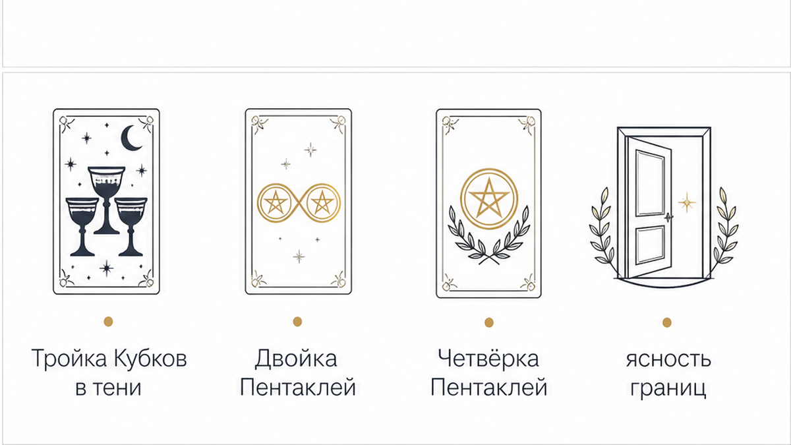

Суббота, десять утра. В чашке остывает чай, а рука по привычке каждые пару минут тянется к телефону. Экран вспыхивает, показывает пустую заставку и снова гаснет. В диалоге с ним тишина повисла ещё с вечера пятницы: твоё последнее сообщение ушло около семи — лёгкий вопрос о планах или ответ на его шутку. В ответ висит серая галочка или равнодушная отметка о прочтении, за которой захлопнулась глухая дверь.
Ещё вчера днём он был на связи: присылал смешные видео, живо обсуждал новости, спрашивал про настроение и грел ощущением близости. Но как только рабочая неделя закончилась, человек будто испарился. Контраст между будничной теплотой и ледяным вакуумом субботы ранит сильнее открытого конфликта. Твой законный уикенд превращается в изматывающее дежурство у экрана и лихорадочную попытку понять: куда он исчез и что произошло?
Мужчина, который регулярно растворяется в воздухе с вечера пятницы до утра понедельника, делает это не из-за севшего аккумулятора и не по случайности. Будни любого человека структурированы внешней рутиной — работой, задачами, дорогой, где телефонная переписка часто служит лёгким фоновым развлечением. Выходные — пространство абсолютной личной автономии. То, как мужчина распоряжается этим временем, показывает его реальные жизненные приоритеты и настоящий круг обязательств. Если тебя системно вычёркивают из субботы и воскресенья, значит, за закрытой дверью его уикенда действуют совсем другие правила.
Когда слова расходятся с делами, карты Таро помогают убрать туман иллюзий и трезво оценить скрытую динамику отношений. В такой ситуации ключевые вопросы звучат предельно конкретно:
Чтобы не сжигать нервы в догадках и вернуть себе спокойную опору, выбери удобный формат диагностики:

Когда мужчина стабильно выпадает из эфира по расписанию выходных, за этим поведением почти всегда стоит один из четырёх психологических и бытовых сценариев. Разовый форс-мажор всегда сопровождается предупреждением или проверяемыми фактами. Системное же молчание подчиняется чёткой внутренней логике.
1. Скрытая семья и несвободный статус (двойная жизнь). Самая частая причина строгого пятничного выпадения. Мужчина официально женат либо живёт в постоянном сожительстве. В рабочие дни он свободен на службе, в разъездах или по дороге в офис, поэтому может открыто переписываться, созваниваться и поддерживать иллюзию полного присутствия. Но в пятницу вечером он возвращается в семью. Дома телефон мгновенно переводится в беззвучный режим, ложится экраном вниз на тумбочку или уносится в ванную. Любые входящие звонки и голосовые сообщения исключены («я занят», «шумно», «плохо ловит сеть»). В понедельник в девять утра семейные рамки спадают, и он снова объявляется в сети как ни в чём не бывало.
2. Эмоциональная деактивация и избегающий тип привязанности. Мужчина с избегающим стилем привязанности воспринимает приближение выходных как потенциальную угрозу своей независимости. Если в будние дни дозированный контакт безопасен — десять минут переписки за обедом не требуют глубокого сближения, — то совместный уикенд подсознательно требует непрерывной эмоциональной включённости и уязвимости на сорок восемь часов. Его нервная система включает аварийный механизм деактивации. Человек захлопывает створки раковины и уходит в изоляцию: сутками сидит за видеоиграми, уезжает в гараж, уходит в спорт или сон. Твои сообщения в этот момент воспринимаются им не как забота, а как давление и посягательство на его суверенную территорию.
3. «Скамейка запасных» и параллельный поиск (режим ожидания). В этом сценарии ты удобна мужчине для рабочих будней. Он поддерживает твой интерес лёгкими вложениями — редкими сообщениями и комплиментами, чтобы закрыть собственную потребность во флирте и разбавить рутину. Однако вечер пятницы и суббота — это золотое время свиданий, клубов и светской жизни. Этот временной ресурс мужчина приберегает для более приоритетных вариантов, поиска новых знакомств или закрытых компаний, куда тебя намеренно не зовут, чтобы сохранять перед окружающими статус свободного холостяка.
4. Манипуляция дефицитом и удержание баланса значимости. Классическая игра на чередовании приближения и резкого отдаления. Мужчина осознанно обрубает контакт на выходные, создавая информационный и эмоциональный вакуум. За два дня женская тревога успевает пройти все стадии: от лёгкого недоумения до паники и самобичевания. В итоге к утру понедельника ценность любого его знака внимания взлетает до небес. Когда на экране появляется сухое «Привет, как дела?», нервная система реагирует на это как на спасительное избавление от мучений. В таком состоянии женщина боится задавать неудобные вопросы и требовать определённости, опасаясь снова спугнуть долгожданный контакт.

Когда телефон молчит, женская психика стремится заполнить неизвестность любой ценой. В попытках вернуть контроль над ситуацией легко совершить ошибки, которые лишь усугубляют зависимость и окончательно ломают баланс в паре.
Первая ловушка — следственный эксперимент и шквал сообщений. Отправка череды вопросов («Куда ты пропал?», «Почему молчишь?», «Я сделала что-то не так?») или повторные звонки в пустоту только укрепляют мужчину в роли хозяина положения. Каждое неотвеченное сообщение передаёт инициативу в его руки и роняет твою ценность. Тишина — это тоже ответ, и довольно красноречивый. Если взрослый человек прочитал текст и не посчитал нужным откликнуться, повторные импульсы не вызовут у него нежности, а лишь создадут ощущение навязчивого контроля.
Вторая ловушка — спасательство и романтизация чужой безответственности. Мозг начинает услужливо придумывать мужчине оправдания героического масштаба: «он спасает срочный проект», «он так сильно устал за рабочую неделю», «у него разрядился телефон за городом». Стоит трезво признать реальность: любой взрослый человек находит ровно десять секунд, чтобы отправить короткое предупреждение: «Уехал за город, буду без связи до вечера воскресенья, напишу в понедельник». Если такого предупреждения нет — это осознанное решение оставить тебя в подвешенном состоянии.
Третья ловушка — отмена собственной жизни и растворение уикенда в экране. Женщина откладывает спорт, отменяет встречи с подругами и сидит дома, надеясь, что он неожиданно появится или позовёт на встречу в последний момент. В итоге суббота и воскресенье оказываются безвозвратно потеряны, а внутри копится глухая обида, которая либо выливается в претензии в понедельник, либо заставляет безропотно проглотить возвращение мужчины на его условиях.

Карты Таро работают как беспристрастное зеркало ситуации: они снимают слой домыслов, обнажают реальное распределение сил и показывают, что именно происходит на невидимой стороне отношений.
Чтобы прекратить слив энергии на чужое молчание и вернуть себе эмоциональную устойчивость, следуй простому пошаговому алгоритму:
Неопределённость всегда сжигает больше сил, чем любая, даже самая отрезвляющая правда. Двое суток молчания истощают сильнее рабочей недели, если ты остаёшься один на один с домыслами и тревогой. Карты Таро работают как беспристрастный компас: они снимают розовые очки, показывают скрытые пружины ситуации и возвращают тебе управление собственной жизнью.
Перестань гадать на кофейной гуще и верни себе твёрдую опору: